morocco.omartaheri.com
Media, Power & the Kingdom of Morocco
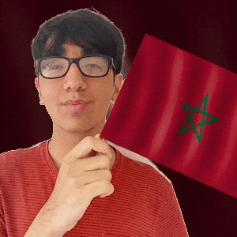
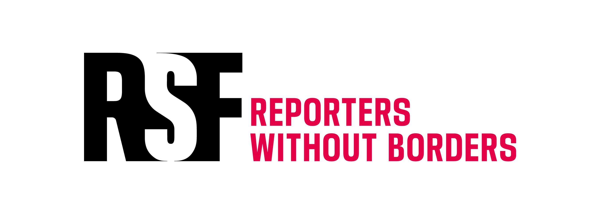
Press Freedom (RSF 2025)
120/180
countries
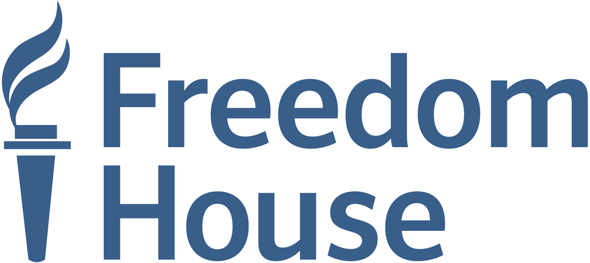
Freedom House
37/100
"Partly Free"
Trust in the news
28%
among the lowest globally
This is the story of how an entire information ecosystem was captured.
the royal conglomerate at the center of everything
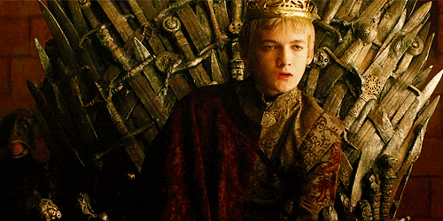
Morocco's largest private holding company. Roughly 3% of national GDP.
Who owns Al Mada?
Through shells named after regis — Latin for "king".
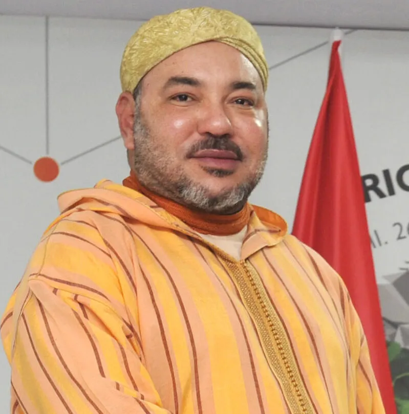
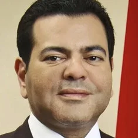
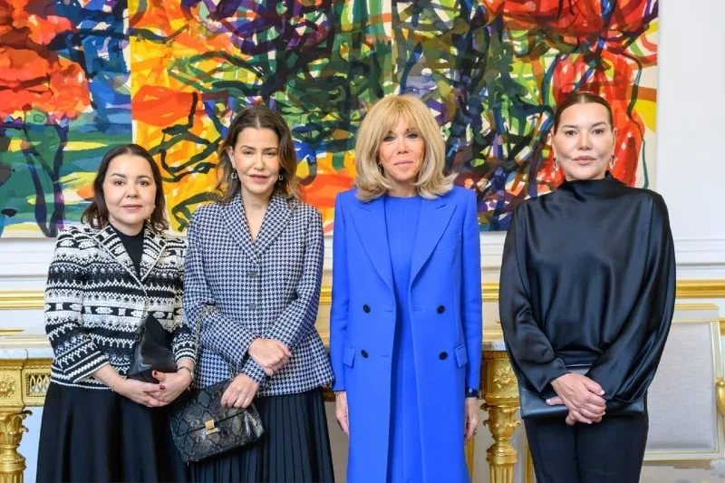
% = each member's share of Copropar, the family fund behind the shells. Source: Business Empires
Al Mada's reach isn't just media.
Economic dominance is inseparable from media control. These are the sectors Al Mada dominates:
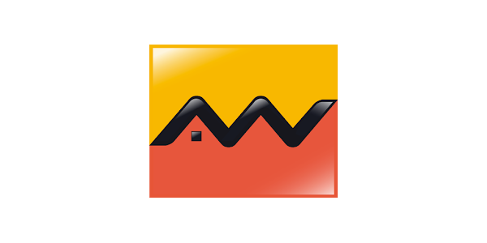
Banking
Attijariwafa Bank
Morocco's largest
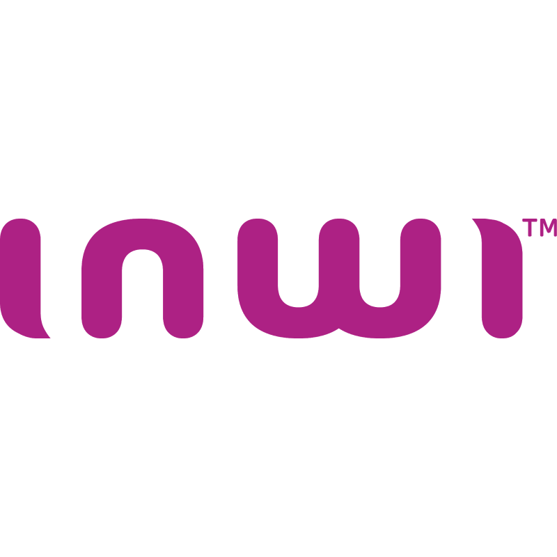
Telecoms
Inwi
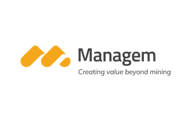
Mining
Managem
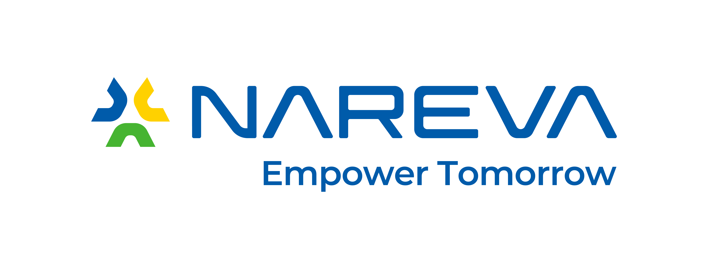
Energy
Nareva
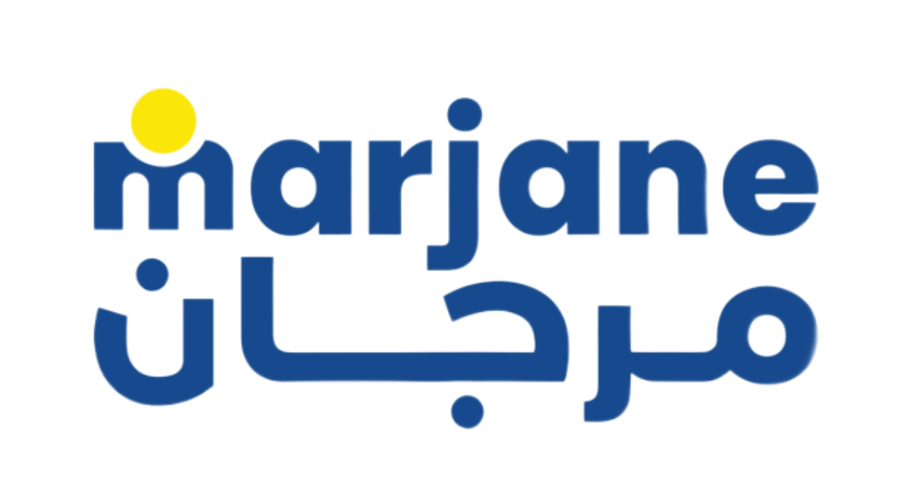
Retail
Marjane
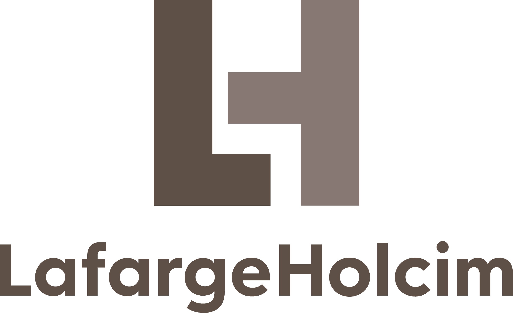
Construction
LafargeHolcim
Maroc
— and yet the crown jewel is still the news —
Al Mada holds direct or indirect stakes in four media companies — three of them rank among the country's top five by turnover and audience share.
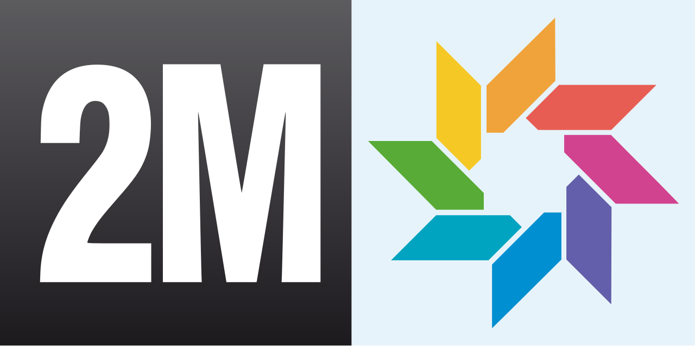
#1 TV · SOREAD
2M TV
Al Mada holds 20% (state holds 72%). ~33% of Moroccan viewers.
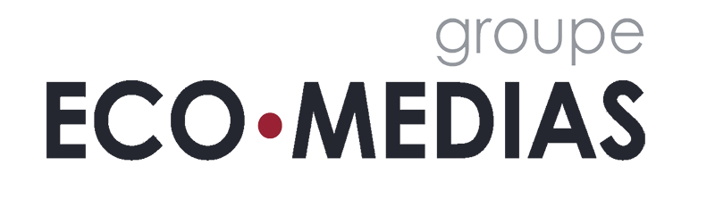
#1 Print · EcoMedias
L'Economiste · Assabah
Shareholder via Global Communication. 24.71% print audience share.
Radio · Medi1
Radio Méditerranée
Internationale
Direct Al Mada shareholding. Medi1 Radio network.
Television: state control, from every angle.
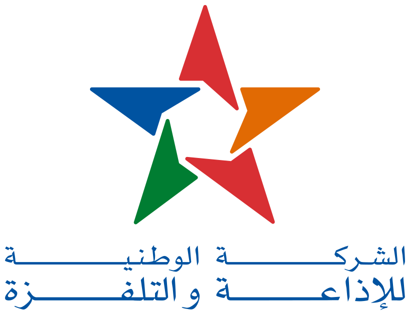
Société Nationale de Radiodiffusion et de Télévision
ownership
100% state
9 TV channels · 6 radio · 88% of all public media funding
SOREAD · ~33% of Moroccan viewership
state
72%
Al Mada
20%
Purchased 2021 by CDG Invest
via
Caisse de Dépôt et de Gestion
state-owned — MAD 105 million
january 2025
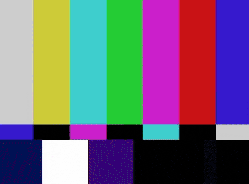
Print & Online: a map of influence
HACA — the "independent" regulator
The 9-seat decision-making body of the Conseil Supérieur de la Communication Audiovisuelle:
— Simon Fraser University
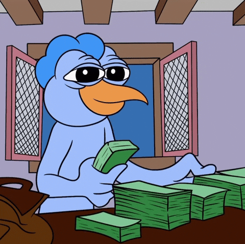
1 · Boycott
Coordinated ad withdrawals by the royal holding to strangle critical outlets.
2 · Prop up
Pro-gov newspapers receive 11–14× more ad revenue than sales justify.
3 · Opaque
State advertising distributed with no transparent criteria — an "opaque and unjustified procedure."
The casualties
Jan 2010
Le Journal Hebdomadaire
"Morocco's most courageous publication"
Oct 2010
Nichane
Best-selling weekly — killed by ONA/SNI's ad boycott
Oct 2013
Lakome
Banned — editor arrested under anti-terror law
2018 →
Akhbar Al-Youm
"Last independent paper" — editors imprisoned one by one
Every major independent publication shuttered over the past two decades.
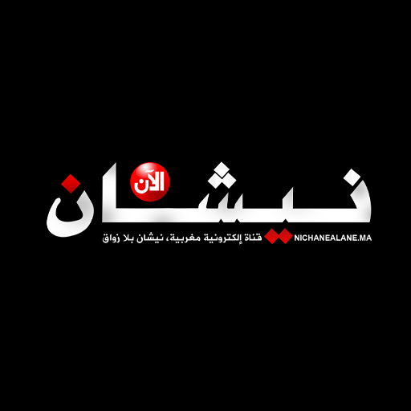
The three red lines
Cross them and you will not be spared. 80% of Moroccan media professionals admit to self-censorship.
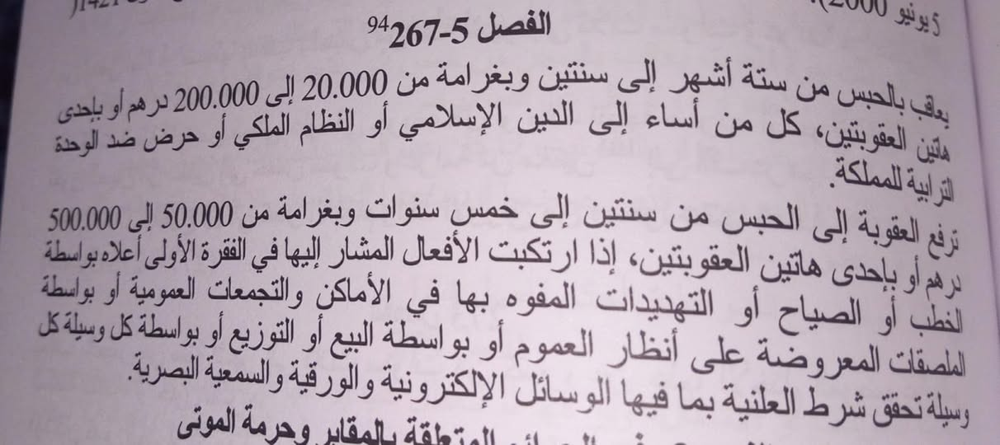
Who crossed the lines
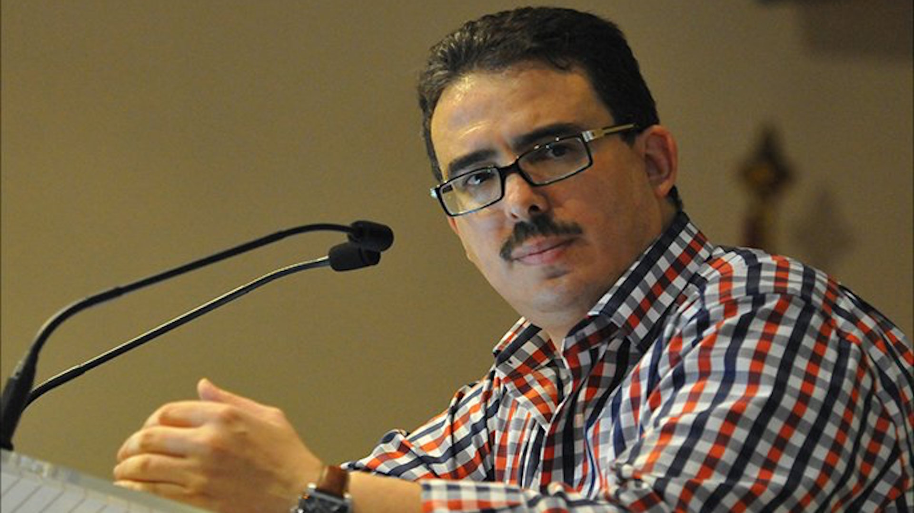
Taoufik Bouachrine
Akhbar Al-Youm · founder
Arrested Feb 2018. Trial closed. Pegasus confirmed on two women's phones in the case.
15 years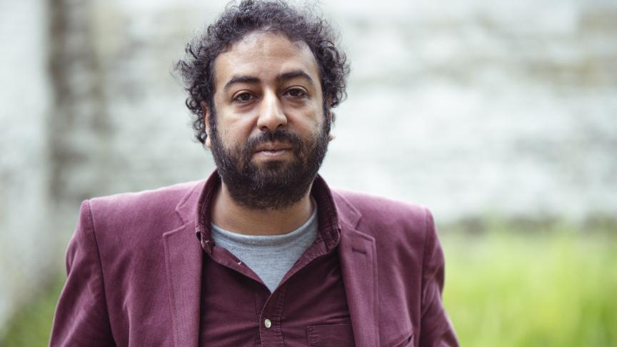
Omar Radi
investigative journalist
Arrested July 2020, weeks after Amnesty revealed Pegasus infection. TrialWatch: "abuse of process."
6 years
Soulaimane Raissouni
Akhbar Al-Youm · editor
Arrested 2 days after a COVID-critical editorial. 122-day hunger strike.
5 yearsMaati Monjib
historian · trainer
Charged with "undermining state security" — he was training citizen journalists.
1 yearAll four pardoned by the King in July 2024. Convictions remain on record. RSF: "judicial harassment has not only continued but intensified."
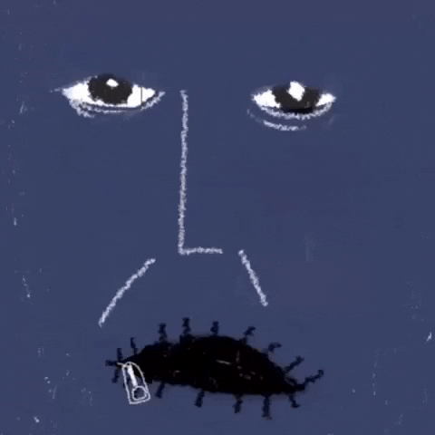
— Organisation Mondiale Contre la Torture (OMCT)
— part two —
Global platforms vs. national sovereignty.
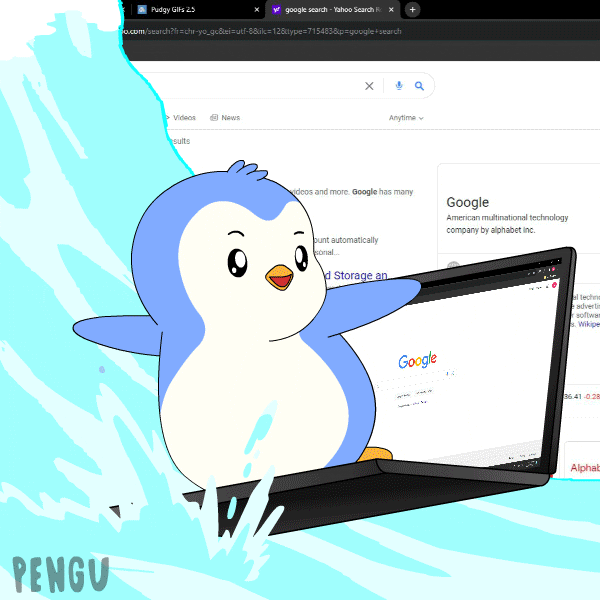
Internet penetration
92.2%
35.3M / 38.3M
Mobile connections
~93%
smartphone-first
Get news online
78%
on platforms the palace cannot own
The real Moroccan media
76%
of population
65%
20.55M users
YouTube
21.3M
potential users
Google Search
93.84%
market share
70%
of internet users
TikTok
~9M
rapidly growing
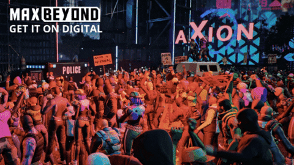
2018 — The Boycott that Scared the Palace
Slide the timeline. Watch the movement spread.
awareness
0%
participation
0%
centrale danone loss
€0M
Morocco leads Africa in Meta data requests
Government requests for user data, 2024 · Meta Transparency Report
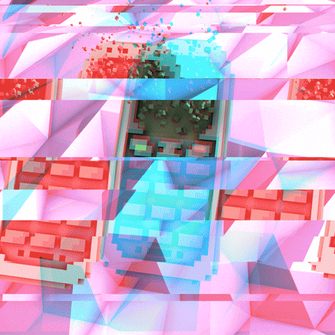
phone numbers selected
~10,000
journalists targeted
38+
phones infected (of 37 examined)
23
Who was on Morocco's target list?
— the reach —
— and 14 others.
— the paradox —
The dual response
Externally — Digital Morocco 2030
• Top-50 global e-gov ranking
• 3,000 startups
• 500 MW Dakhla data center
• Oracle cloud in Casablanca & Settat
• Mistral AI for Arabic & Amazigh
• "Cloud First" national roadmap
Internally — extending the old playbook
• HACA expansion into a "digital watchdog"
• Content removal orders to global platforms
• June 2023 — elected press council dissolved
• €100,000 deposit required for new outlets
• Joint DGSN/DGST/DGED warning to Moroccans abroad
Moroccans have already voted with their screens.
Questions?